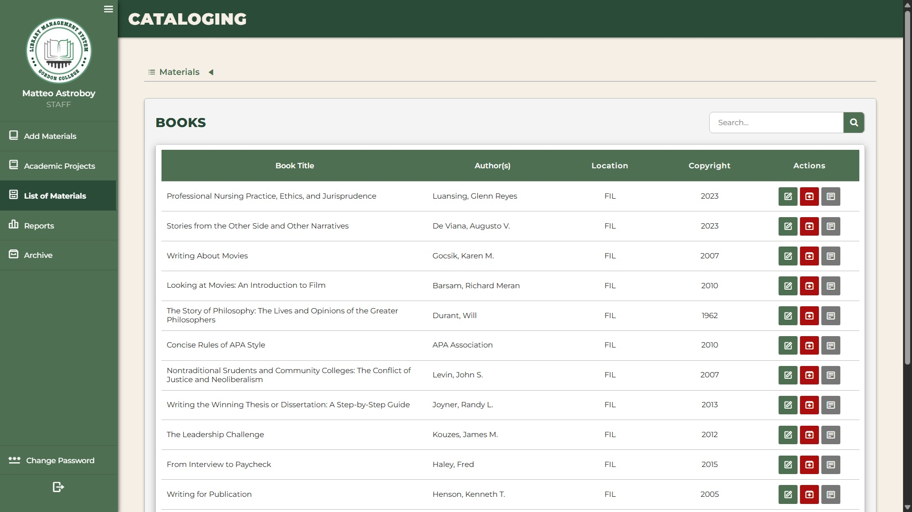
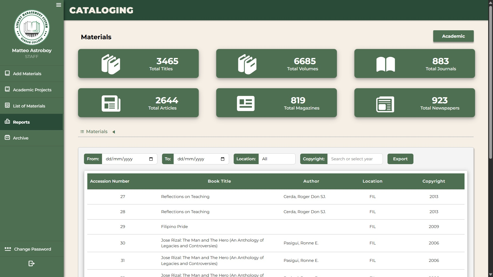

Overview:
Library management system is a system for Gordon College Library and is
divided among 6 subsystems namely Maintenance (Superadmin functions),
Cataloging (Library material inputs), Circulation (For borrowing of books),
Locker (For students and staff using lockers), Online Public Access Catalog
(For public viewing of available materials), and Student Portal (For student
reservation and record history)
Objectives:
-
As a database leader:
Ensure database structure would cover all systems and be operational
-
As a back end leader:
Ensure all back end developers from other groups would adhere to RESTful
API principles and follow project structure
-
As a back end developer of the cataloging system:
Build and cover all data entry points from the front end
Application Screenshots



Cataloging System Application
Features include: (1) Data create, read, update, and delete; (2) Bulk data
imports; (3) Reports generation with filters and in excel format; (4) Data
archive through multiple databases with the use of database transactions
Diagrams and Flowchart
Entity Relationship Diagram of All Systems
Data Flow Diagram of the Cataloging System